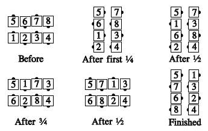
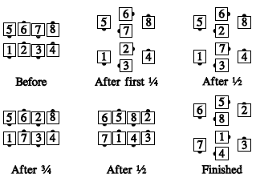

From parallel waves, or other appropriate formations: Those who can Turn 1/4 by the Right, those who can Turn 1/2 by the Left, those who can Turn 3/4 by the Right, those who can Turn 1/2 by the Left, and those who can Turn 1/4 by the Right.
e.g., from a right-hand wave:

or from a left-hand wave:

For each part of the call, there must be a dancer performing this part and the immediately preceding or following one. For example, the call is not proper from Magic Columns.
This is a 5-part call, with each arm turn being one part. "Swing the Fractions 4/5" is common.